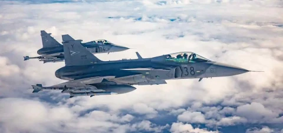
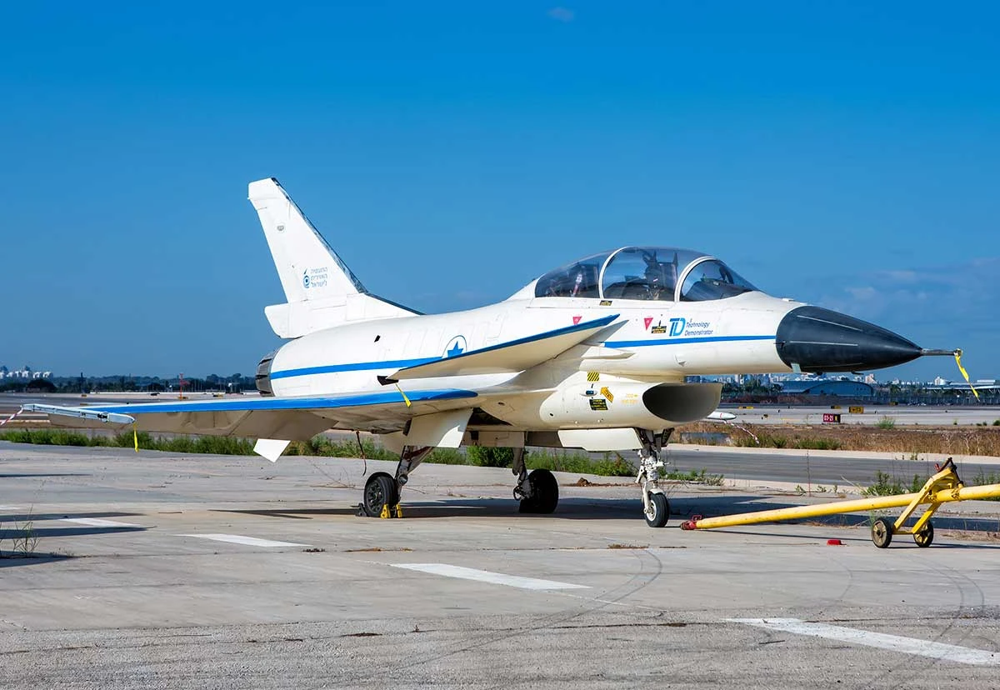
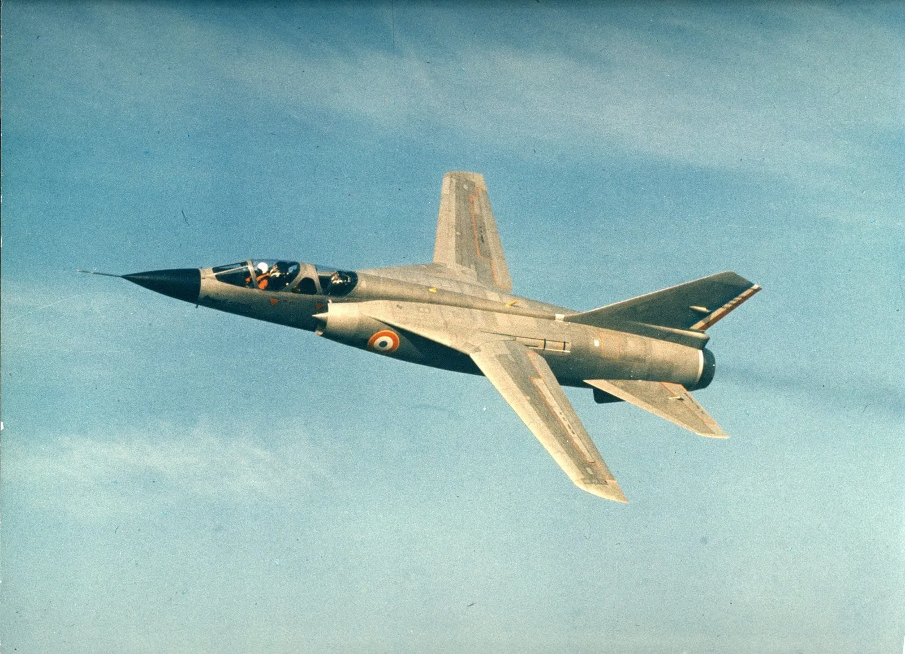
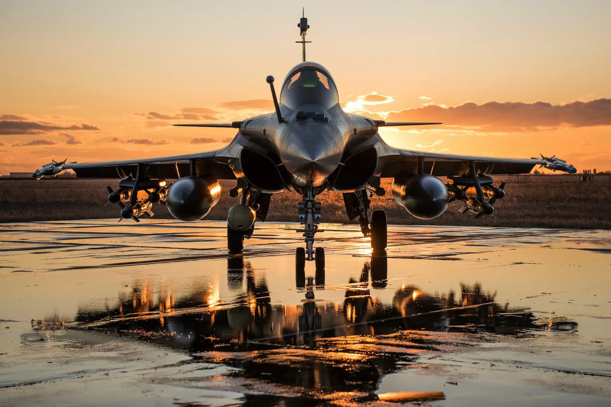
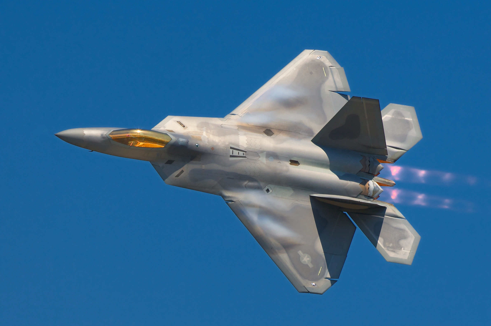
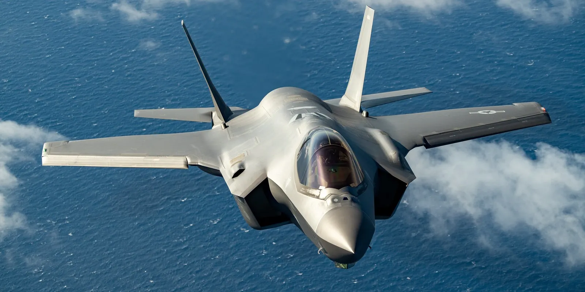

Gripen

The Saab Gripen is a lightweight and versatile fighter aircraft designed for multirole defense missions. Combining high maneuverability with advanced technology, it is equipped with an advanced radar and a digital cockpit, allowing it to perform air-to-air and air-to-ground combat missions efficiently. Its low operating cost, optimized fuel consumption, and ability to operate from short runways make it a flexible and economical choice. The Gripen is ideal for private users seeking a modern fighter aircraft.
60M - 80M €
Learn more
IAI Lavi

The IAI Lavi is a multirole fighter aircraft developed by Israel Aerospace Industries. Designed for air superiority and ground attack missions, it is equipped with advanced avionics systems and a high-performance radar. The Lavi offers great maneuverability and high survivability thanks to its electronic countermeasures. It is an ideal choice for private users seeking a modern and high-performance fighter aircraft.
50M - 70M €
Learn more
Typhoon

The Eurofighter Typhoon is a multirole fighter aircraft developed by a European consortium. Designed for air superiority and ground attack missions, it is equipped with state-of-the-art avionics systems and an AESA radar. The Typhoon offers great maneuverability and high survivability thanks to its electronic countermeasures. It is an ideal choice for private users seeking a modern and high-performance fighter aircraft.
80M - 100M €
Learn more
Mirage G

The Mirage G is a fighter aircraft developed by Dassault Aviation. Designed for air superiority and ground attack missions, it is equipped with advanced avionics systems and a high-performance radar. The Mirage G offers great maneuverability and high survivability thanks to its electronic countermeasures. It is an ideal choice for private users seeking a modern and high-performance fighter aircraft.
70M - 90M €
Learn more
Mirage 2000

The Mirage 2000 is a multirole fighter aircraft developed by Dassault Aviation. Designed for air superiority and ground attack missions, it is equipped with advanced avionics systems and a high-performance radar. The Mirage 2000 offers great maneuverability and high survivability thanks to its electronic countermeasures. It is an ideal choice for private users seeking a modern and high-performance fighter aircraft.
60M - 80M €
Learn more
Mirage 4000

The Mirage 4000 is a multirole fighter aircraft developed by Dassault Aviation. Designed for air superiority and ground attack missions, it is equipped with advanced avionics systems and a high-performance radar. The Mirage 4000 offers great maneuverability and high survivability thanks to its electronic countermeasures. It is an ideal choice for private users seeking a modern and high-performance fighter aircraft.
70M - 90M €
Learn more
Rafale

The Dassault Rafale is a multirole fighter aircraft developed by Dassault Aviation. Designed for air superiority and ground attack missions, it is equipped with state-of-the-art avionics systems and an AESA radar. The Rafale offers great maneuverability and high survivability thanks to its electronic countermeasures. It is an ideal choice for private users seeking a modern and high-performance fighter aircraft.
90M - 110M €
Learn more
F-22

The Lockheed Martin F-22 is a stealth fighter aircraft developed by Lockheed Martin. Designed for air superiority missions, it is equipped with state-of-the-art avionics systems and an AESA radar. The F-22 offers great maneuverability and high survivability thanks to its electronic countermeasures. It is an ideal choice for private users seeking a modern and high-performance fighter aircraft.
150M - 180M €
Learn more
F-35

The Lockheed Martin F-35 is a stealth multirole fighter aircraft developed by Lockheed Martin. Designed for air superiority and ground attack missions, it is equipped with state-of-the-art avionics systems and an AESA radar. The F-35 offers great maneuverability and high survivability thanks to its electronic countermeasures. It is an ideal choice for private users seeking a modern and high-performance fighter aircraft.
120M - 150M €
Learn more